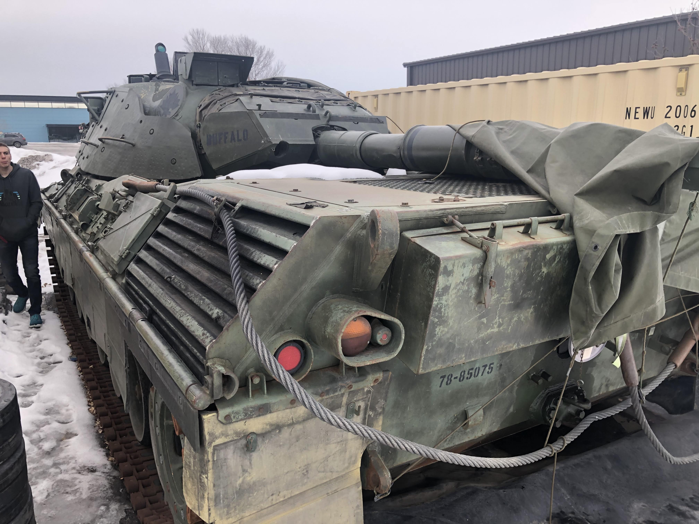

The Metal Might of the Soviet Union

The T-72 was developed by Russia and was put into service in 1973, and it still is in use up to this day. The T-72 was an improvement on the T-62, it sported a 125 mm smooth bore main gun, with a max speed of 37-47 mph. There were 25,000 units produced, and they are in use in over 40 different countries. The T-72 has many variations and modifications allowing each country to adapt the tank for their particular needs.
The Metal Might of the "Fatherland"
The Leopard 1 was developed and entered service in 1965. The tank featured HEAT (High Explosive Anti Tank) chemical rounds designed to easily penetrate conventional heavy armor. With modern munitions, the use of heavy tanks began to wain as armor was less effective, and speed, mobility, and adaptive weapon systems became the new focus. The Leopard 1 was developed with the main goal of maneuverability with firepower as the second focus.
